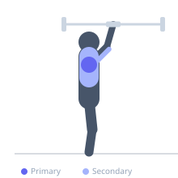

Exercise guide / Cuban Press
Cuban Press
The Cuban press is a three-phase shoulder exercise that combines an upright row, external rotation, and an overhead press in a single movement. It trains the full rotator cuff through a functional arc, particularly emphasizing the external rotators and infraspinatus. Originally developed for overhead athletes requiring rotator cuff health and shoulder mobility, the Cuban press is used both as a corrective exercise and as a warm-up for heavy overhead pressing sessions.
Primary muscles
infraspinatus
teres minor
deltoid anterior
Secondary muscles
deltoid lateral
trapezius upper
triceps long head
Equipment
Dumbbell (Fixed)
Optional
Standard Barbell


Starting position
- Stand holding dumbbells (or a barbell) at thigh level with an overhand grip.
Setup
- Use very light weights — this is a technique and health exercise, not a strength movement. 2.5-10 lbs per dumbbell is typical.
Steps
- Step 1: Begin with dumbbells at the thighs.
- Step 2: Upright row phase: raise the elbows up and out to bring the weights to shoulder height with elbows at 90 degrees and upper arms parallel to the floor.
- Step 3: External rotation phase: rotate the forearms upward until forearms are vertical (elbows still at 90 degrees, now pointing up).
- Step 4: Press phase: press the dumbbells overhead to full lockout.
- Step 5: Reverse the motion through each phase back to the starting position.
Coaching cues
- Three distinct movements — row, rotate, press
- Light weight — quality of motion matters
- Reverse every phase on the way down
Breathing
- Breathe naturally — this is typically used for warm-up or corrective purposes.
Range of motion
- Full upright row height, full external rotation, full overhead lockout — three distinct positions.
Tempo
- Slow and deliberate through each phase — no specific tempo beyond controlled execution
Common mistakes
- Using too much weight, which corrupts the rotation technique
- Skipping the controlled return through all three phases
- Rushing through the exercise without pausing at each transition
Safety
- This exercise should feel comfortable — any shoulder pain is a signal to stop and assess
Training
- strength: 8–15 reps
- strength: 2–3 sets
- Rest: {'strength': 60}